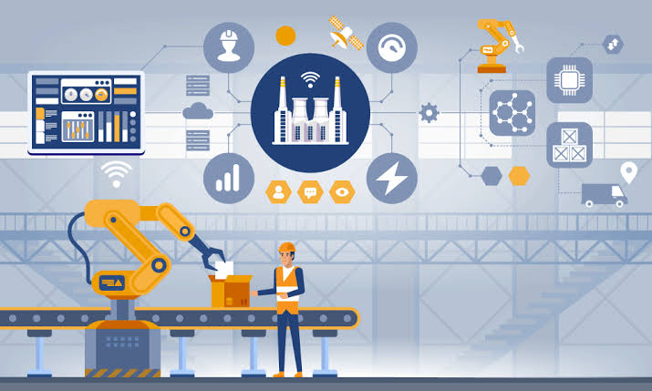
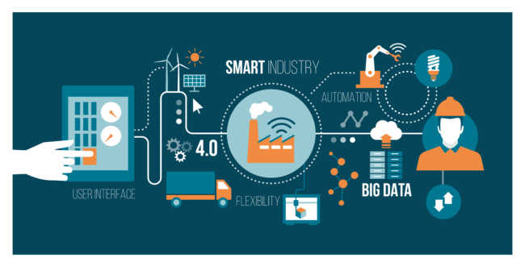
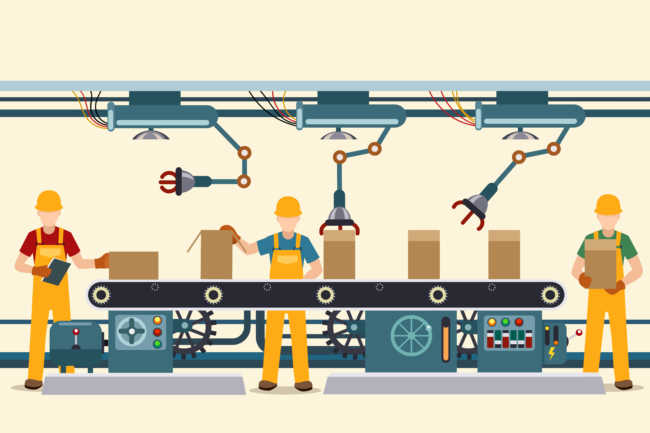
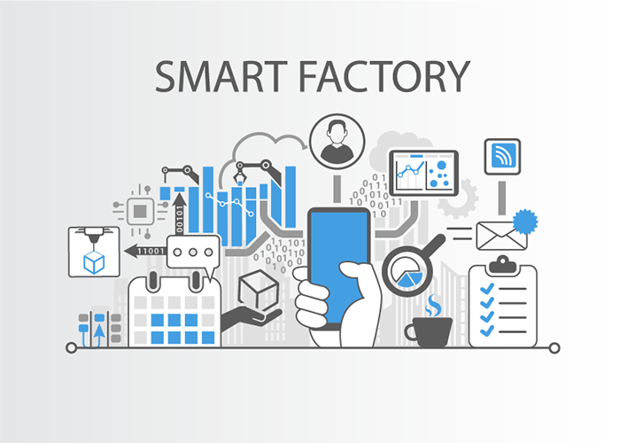

Also known as IIoT, industrial IoT devices acquire and analyze data from connected equipment, (OT) operational technology, locations and people. Combined with operational technology (OT) monitoring devices, IIOT helps regulate and monitor industrial systems.
 The IoT can realize the seamless integration of various manufacturing devices equipped with sensing, identification, processing, communication, actuation, and networking capabilities. Based on such a highly integrated smart cyber-physical space, it opens the door to create whole new business and market opportunities for manufacturing. Network control and management of manufacturing equipment, asset and situation management, or manufacturing process control bring the IoT within the realm of industrial applications and smart manufacturing as well. The IoT intelligent systems enable rapid manufacturing of new products, dynamic response to product demands, and real-time optimization of manufacturing production and supply chain networks, by networking machinery, sensors and control systems together.
Digital control systems to automate process controls, operator tools and service information systems to optimize plant safety and security are within the purview of the IoT. But it also extends itself to asset management via predictive maintenance, statistical evaluation, and measurements to maximize reliability. Industrial management systems can also be integrated with smart grids, enabling real-time energy optimization. Measurements, automated controls, plant optimization, health and safety management, and other functions are provided by a large number of networked sensors.
 There are numerous IoT applications in farming such as collecting data on temperature, rainfall, humidity, wind speed, pest infestation, and soil content. This data can be used to automate farming techniques, take informed decisions to improve quality and quantity, minimize risk and waste, and reduce effort required to manage crops. For example, farmers can now monitor soil temperature and moisture from afar, and even apply IoT-acquired data to precision fertilization programs.
In August 2018, Toyota Tsusho began a partnership with Microsoft to create fish farming tools using the Microsoft Azure application suite for IoT technologies related to water management. Developed in part by researchers from Kindai University, the water pump mechanisms use artificial intelligence to count the number of fish on a conveyor belt, analyze the number of fish, and deduce the effectiveness of water flow from the data the fish provide. The specific computer programs used in the process fall under the Azure Machine Learning and the Azure IoT Hub platforms.
.jpg)
.jpg)
.jpg)
.jpg)